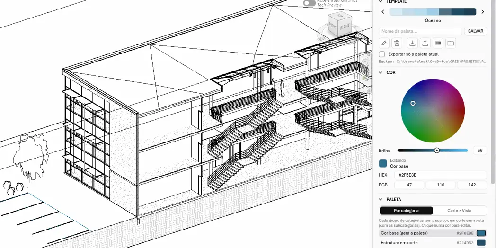

ApresentaçãoPresentation
ArqViz
Aplica templates de cor de apresentação por grupos de categorias na vista ativa, inclusive em links, com pré-visualização ao vivo. A paleta nasce de uma cor base ou da biblioteca da equipe e pode virar View Template. Applies presentation color schemes to groups of categories in the active view, links included, with a live preview. Palettes come from a single base color or the team library, and can be saved as a View Template.